무선설비산업기사 (2007-03-04 기출문제)
1과목: 디지털 전자회로
1. 다음주 그림(B)와 같은 회로에 그림(A)와 같은 파형의전압을 인가할 경우 출력에 나타나는 전압파형으로 가장 적합한 것은?
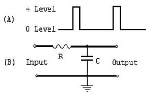
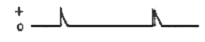
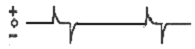
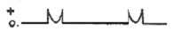
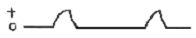
(정답률: 알수없음)

2. 그림의 논리회로에서 3대의 입력단자에 각 각 1의 입력이 들어오면 출력A와 B의 값은?
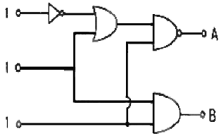
- A=1, B=0
- A=1, B=1
- A=0, B=0
- A=0, B=1
(정답률: 60%)
3. 이미터 전류를 1MA 변화시켰더니 컬렉터 전류의 변화는 0.96mA였다. 이 트랜지스터의 β 는 얼마인가?
- 0.96
- 1.04
- 24
- 48
(정답률: 55%)
4. 듀티사이클이 0.1이고 주기가 40us 인 겨우 펄스폭으 몇us인가?
- 10
- 4
- 3
- 1
(정답률: 100%)
5. 다음 논리식을 간략하면 어떻게 되는가?
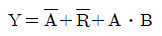
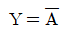
- Y = 1
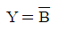
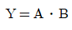
(정답률: 알수없음)
6. 단동조 증폭기가 492㎑의 공진 주파수에서 7㎑의 대역폭으 갖는다고 하면 이 회로의 Q는 약 얼마인가?
- 49
- 70
- 98
- 345
(정답률: 알수없음)
7. 그림과 같은 회로에 대한 설명 중 틀린 것은 ?
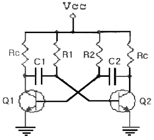
- Q1 이 도통 상태이면 Q2는 차단 상태이다.
- 비안정 멀티바이브레이터 회로이다
- 발진의 주기는(T) 약 0.7 x (R1.C1+R2 C2)초이다.
- Q2의 컬렉터 출력으로 정현파가 발생된다.
(정답률: 알수없음)
8. 그림의 연산증폭기 회로에서 Rf 대신 콘덴서 c로 바꿀 경우 그 역활로 옳은 것은?
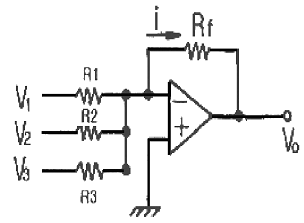
- 이상기
- 계수기
- 적분연산기
- 부호변화기
(정답률: 60%)
9. 다음 중 논리 IC 의 전력소모가 일반적으로 가장 적은 것은?
- TTL
- ECL
- CMOS
- DTL
(정답률: 알수없음)
10. 다음중 슈미트 트리거 회로에 대한 설명으로 가장 적합한것은?
- 주로 선형 증폭기로 사용한다.
- 계단파 발진기로 사용한다.
- 삼각파의 입력으로 정현파가 출력된다.
- 히스테리시스 특성을 갖는 비교기이다.
(정답률: 79%)
11. FET의 특성으로 옳은 것은?
- 쌍극성 소자이다
- BJT보다 저입력 임피던스를 갖는다.
- 입력신호 전압을 게아트에 인가해서 채널전류를 제어한다.
- P채널 FET에 흐르는 전류는 전자의 확산현상에 의해 발생한다.
(정답률: 알수없음)
12. JK 플립프릅의 2개의 입력이 똑같이 1이고 클록 펄스가 계속 들어오면 출력은 어떤 상태가 되는가?
- Set
- Reset
- Toggle
- 동작불능
(정답률: 알수없음)
13. 그림과 같은 정류 회로에서 입력 전압의 실효치가 100V일때 부하저항에 나타나는 평균전압은 약 몇 v인가?
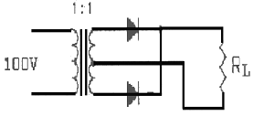
- 90
- 80
- 70
- 60
(정답률: 42%)
14. 다음 중 반송파의 진폭과 위상을 동시에 변조하는 방식에 해당하는 것은?
- ASK
- FSK
- PSK
- QAM
(정답률: 알수없음)
15. 수정발진기는 수정의 임피던스가 어떤 조건일때 안정된 발진을 계속하는가?
- 저항성
- 용량성
- 유도성
- 표유용량성
(정답률: 알수없음)
16. 다음중 부궤한 증폭회로의 특징이 아닌 것은?
- 이득증가
- 비선형 일그러짐 감소
- 잡음감소
- 고주파특성의 개선
(정답률: 91%)
17. 다음중 레이스(Rase)현상을 방지하기 위하여 사용되는 플립플롭은?
- JK
- T
- M/S
- D
(정답률: 47%)
18. 전류이득이 Hfe1,Hfe2 인 TR1 TR2가 그림과 같이 다링톤연결되어있다. 이 회로의 전체전류이득 Hfe는 얼마인가?
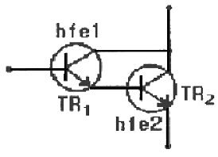
- hfe1,hfe2 + hfe1 + hfe2 + 1
- hfe1,hfe2 + hfe1 + hfe2
- hfe1,hfe2 + hfe1
- hfe1,hfe2 + hfe2
(정답률: 알수없음)
19. 다음중 Rs 플립플롭에 대한 설명으로 틀린것은?
- S=0, R=0 이면 출력은 변하지 않는다.
- S=1, R=0 이면 출력은 1이 된다.
- S=0, R=1 이면 출력은 0이 된다.
- S=1, R=1 이면 출력은 전상태와 반대가 된다.
(정답률: 70%)
20. 다음중 레지스터의 용도로 가장 적합한것은?
- 펄스를 발생하는데 k용한다.
- 카운터의 대용으로 쓰인다.
- 회로를 동기시키는데 사용된다.
- 데이터를 일시 저장하는데 사용한다.
(정답률: 알수없음)
2과목: 무선통신 기기
21. FM 수신기의 설명 중 잘못괸 것은?
- 진폭제한기를 사용한다
- 주파수 변별기를 사용한다.
- 스켈치 회로가 사용된다.
- Pre-emphasis 회로가 필요하다.
(정답률: 31%)
22. 수정발진기의 주파수 안전도가 높은 이유로 가장 타당한 것은?
- 수정진동자에는 압전효과가 있기 때문
- 수정진동자는 Q가 매우 높기 때문
- 수정발진기는 출력이 적기 때문
- 수정진동자의 진동수는 전원전압의 변화와 관계없기 때문
(정답률: 알수없음)
23. AM 수신기에서 근접 주파수 선택도를 축정하는데 필요 하지 않은 것은 ?
- 레벨미터
- 의사 공중선
- 저주파 발진기
- 표준신호발생기
(정답률: 64%)
24. 다음중 수신기의 전기적 성능을 판단하는 항목으로 옳게 짝지어진 것은?
- 감도, 선택도, 안정도, 충실도
- 감도, 선택도, 공중선 전력, 충실도
- 변조도, 공중선전력, 좌우 분리도, 전력효율
- 변조도, 좌우분리도, 안정도, 전력효율
(정답률: 알수없음)
25. AM 무선 송신기가 과변조 되었을때 수신측에 나타나는 현상으로 맞는것은?
- 수신전파의 측파대 폭이 좁아진다.
- 수신음이 찌그러진다.
- 수신음의 신호대답음비가 커진다.
- 수신기 공중선의 동조 잡기가 힘들어진다.
(정답률: 알수없음)
26. 이동통신용 수신 전파신호를 측정할 경우 필요한 장비가 아닌것은?
- 스펙트럼 분석기
- GPS
- LNA
- RF 전력측정기
(정답률: 알수없음)
27. 다음중 FM수신기와 AM수신기에서 모두 사용되는 것은?
- 국부발진기
- 주파수변별기
- 스켈치회로
- 진폭제한기
(정답률: 알수없음)
28. 우리나라 디지털 이동통신 무선접속 방식의 표준은?
- 주파수분할 다원접속
- 시분할 다원접속
- 공간분할 다원접속
- 부호분할 다원접속
(정답률: 알수없음)
29. SSB와DSB 통신방식에 대한 장단점의 비교 설명 중 틀린것은?
- SSB의 점유주파수 대역폭은 DSB의 1/2이다.
- 변조율이 100%인 경우에는 SSB송신기의 소비전력은 DSB송신기 소비전력의 약 30%이다
- SSB는 DSB에 비해 선택성 페이딩에 강하다.
- SSB는 DSB에 비해 회로가 간단하다.
(정답률: 알수없음)
30. 마이크로웨이브 통신에서 송신기의 출력이37dBm, W/G손실이 3dB일때 안테나 입력단에 인가되는 전력은 약 몇 W인가?
- 1.5
- 2.5
- 5
- 10
(정답률: 알수없음)
31. 축전지 취급상 주의 사항이 아닌 것은?
- 방전 직후 곧 충전할 것
- 과 방전을 하지 말것
- 방전전류는 과대하게 할것
- 전해액면이 극판 위에 차 있게 할 것
(정답률: 알수없음)
32. 진폭변조에서 변조도에 대한 설명으로 틀린것은?
- 신호파의 최대값을 반송파의 최대값으로 나눈 값이다.
- 반송파의 크기와 신호파의 크기에 따라 정해진다.
- 최대주파수편이와 신호주파수와의 비이다
- 진폭변화의 정도를 나타낸다
(정답률: 알수없음)
33. 다음중 FM수신기에서 입력 진폭변화에 대한 영향이 가장 적은 검파기는?
- 다이오드 직선 검파기
- 경사형 검파기
- 포스터 실리형 검파기
- 비 검파기
(정답률: 알수없음)
34. C급 무선주파 전력 증폭기에서 여진 전압이 일정할 때 컬렉터 회로의 LC를 동조시키면 비동조시에 비해 평균컬렉터 전류는?
- 증가한다
- 감소한다
- 일정하다
- 발진하다
(정답률: 알수없음)
35. 다음 중 무선 송신기의 전기적 측정시험이 아닌것은?
- 이득
- 전력
- 왜율
- 대역폭
(정답률: 19%)
36. 전원 평활회로에서 초크(choke)입력형이 콘덴서 입력형에 비해 장점이 되지 못하는 것은?
- 전압변동률이 양호하다
- 대전류에 적합하다.
- 리플률은 부하저항의 변동에 상관없이 우수하다.
- 사용 정류기는 어느 것이나 사용할 수 있다.
(정답률: 알수없음)
37. 수신기에서 이득이 13dB, 잡음 지수 1.3dB인 증폭기 후단에 이득이 10dB잡음 지수가 1.5dB인 증폭기가 있다. 이 수신기의 종합잡음 지수는 약 몇 dB 인가?
- 1.30
- 1.34
- 1.85
- 2.25
(정답률: 알수없음)
38. AM송신기의 변조도를 측정하기 위해 오실로스코프에 포락선이 나타나게 하려면 오실로스코프에 가할 전압은?
- 반송파와 피변조파
- 피변조파와 톱니파
- 서로 90˚ 위상차를 갖는 피변조파
- 피변조파와 변조파
(정답률: 40%)
39. 다음 중 전리층 반사파를 이용하여 원거리통신이 가능한 단파대(HF)에서 주로 사용되고 있는 통신방식은?
- DSB
- SSB
- VSB
- FM
(정답률: 34%)
40. AM무선송신기의 변조율이 50%이고, 반송파 전력이 40W일 때, 피변조파의 전력은 몇 W인가?
- 35
- 40
- 45
- 50
(정답률: 알수없음)
3과목: 안테나 개론
41. 그림과 같은 동축 급전선의 특성 임피던스는 얼마인가? (단, d=5mm , D = 2 cm , ε5= 2.3)
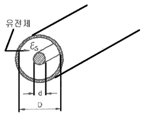
- 약55Ω
- 약65Ω
- 약75Ω
- 약85Ω
(정답률: 알수없음)
42. λ/4 수직접지안테나와 반파장 다이플안테나에 동일전력을 공급했을때 전계강도의 비(λ/4 수직접지안테나 : 반파장 다이폴안테나)는 대략얼마인가?
- 2 : 1
- 0.5 :1
- 1.414 : 1
- 0.707 : 1
(정답률: 알수없음)
43. 전리층의 제1종 감쇄에 대한 설명 중 잘못된것은?
- 주파수 자승에 반비례한다
- 전자밀도에 반비례한다.
- 평균충돌 횟수에 거의 반비례한다.
- 전지층을 비스듬히 통과할수록 크다.
(정답률: 40%)
44. 안테나 선로의 중간에 코일을 삽입하면 어떤역활을 하는가?
- 등가적으로 안테나의 길이가 것과 같은 효과가 있다.
- 더 높은 주파수에서 공진하는 효과가 있다.
- 지향성을 변화시키는 효과가 있다.
- 임피던스를 정합시키는 작용을 한다.
(정답률: 29%)
45. 아래와 같은 구형 도파관에 TM10 파의 차단 파장은?
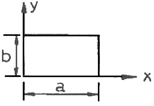
- 2/a
- a
- 2a
- 3a
(정답률: 70%)
46. 야기(Yagi)안테나에 대한 설명중 틀린것은?
- 단향성의 예민한 지향특성을 갖는다.
- 도파기의 수를 증가시키면 이득이 증가한다.
- 도파기의 길이는 반파장보다 짧다.
- 각 소자의 간격은 반파장보다 크다.
(정답률: 알수없음)
47. 직각좌표계(x,y,z)로 표시되는 전계 E가 X성분, 자계 H가 Y성분을 가질때 포인팅 전력 P의 진행방향은?
- x방향
- y방향
- z방향
- x와y방향
(정답률: 알수없음)
48. 안테나의 빙폭(반치각)에 관한 설명으로 옳은 것은?
- 최대 복사전계강도의 2/1이 되는 두방향사이의 각
- 최대 복사전력의 2/1이 되는 두 방향사이의 각
- 복사전계가 0이 되는 두방향사이의 각
- 최대 복사방향을 중심으로 충복사 전력의 90%를 포함하는 범위의 사이의 각
(정답률: 64%)
49. 브로드사이드 헤리칼안테나의 권수가 5일때 도선 선단에서의 전력은 급전점에서의 전력과 비교할 경우 감쇄값으로 가장 타당한것은?
- 5㏈
- 10㏈
- 30㏈
- 100㏈
(정답률: 알수없음)
50. 카세그레인 안테나에 관한 설명중 틀린 것은?
- 위성통신의 지구국용 안테나로 사용된다.
- 1차 복사기와 송신기가 직결되므로 급전계 전송손실이 작다.
- 2개의 반사기와 1개의 복사기로 구성된다.
- 송신할 때 1차 복사기 주반사기 부반사기 순으로 전파가 진행된다.
(정답률: 30%)
51. 다음중 극초단파대 이상에서 안테나의 특성분석에 사용되는 요소로 가장적합한것은?
- 전계강도
- 실효길이
- 수신전압
- 전력밀도
(정답률: 알수없음)
52. 인테나에 광대역성을 부여하는 방법과 관계가 가장 적은 것은?
- 진행파 여진형 소자를 이용하는 방법
- Q를 낮게 하여 공진특성을 완만하게 하는 방법
- 자기 임피던스의 변화를 중대시키는 방법
- 대수 주기형으로 하는 방법
(정답률: 54%)
53. 다음 평행 2선식 급전선 중에서 특성 임피던스가 가장 높은것은?
- 선의 지름 1.2㎜, 선의간격40㎝
- 선의 지름 2.4㎜, 선의간격40㎝
- 선의 지름 3.0㎜, 선의간격30㎝
- 선의 지름 1.2㎜, 선의간격30㎝
(정답률: 알수없음)
54. 동축 케이블과 비교하여 도판관의 특징으로 옳지 않은 것은?
- 저역필터의 역할을 한다.
- 복사손실이 없다.
- 표피작용에 의한 저항손실이 적다.
- 유전체 손실이 적다.
(정답률: 알수없음)
55. 태양에서 방출된 자외선의 돌발적 증가로 인하여 발생되는 전파방해는?
- 에코현상
- 룩셈부르크 효과
- 델린저 현상
- 자기량
(정답률: 알수없음)
56. 사용주파수가 1.5㎒ 인 1/4파장 수직접지 안테나의 실효고는 약 몇 m인가?
- 32
- 50
- 70
- 140
(정답률: 알수없음)
57. 다음중 단파에서 페이딩의 종류에 따른 이의 경감 대책으로 가장 적합하지 않은 것은?
- 간섭성 페이딩 : 공간 다이버시티
- 편파성 페이딩 : 편파 다이버시티
- 흡수성 페이딩 : AGC 회로
- 선택성 페이딩 : AFC 회로
(정답률: 알수없음)
58. 반파장 다이폴 안테나의 복사 저항은 몇Ω 인가?
- 36.6
- 73.13
- 293
- 300
(정답률: 46%)
59. 단파통신의 일반적 특징이 아닌것은?
- 소전력으로 원거리 통신이 가능하다.
- 장파에 비해 공전의 방해가 크다.
- 페이딩의 영향을 받는다.
- 델린저현상의 영향을 받는다.
(정답률: 70%)
60. 전파가 대류권을 진행할 때 받는 빗방울에 의한 감쇄와 가장 관계 깊은 손실은?
- 산란에 의한 손실
- 회절에 의한 손실
- 분자에 의한 손실
- 반사에 의한 손실
(정답률: 72%)
4과목: 전자계산기 일반 및 무선설비기준
61. 다음 중 어떤 명령이 수행되기 전에 가장 우선적으로 행하여야 하는 마이크로 오퍼레이션은?
- PC ← PC + 1
- MAR ← PC
- MBR ← M
- PC ← 0
(정답률: 알수없음)
62. 연산장치에 있는 레지스터로서 사칙연산과 논리연산 등의 결과를 일시적으로 기억하는 레지스터는?
- Accumulator
- Instruction register
- Stack pointer
- Flag register
(정답률: 90%)
63. 다음 중 접근 속도(access time)가 빠른 것부터 순서대로 나열된 기억장치는?
- 자기코어 - 자기테이프 - 자기드럼
- 자기버블 - 캐시 - 자기코어
- 자기코어 - 캐시 - 자기디스크
- 캐시 - 자기코어 - 자기드럼
(정답률: 알수없음)
64. 다음 중 CPU가 수행하는 4개 사이클(cycle)에 속하지 않는 것은?
- Fetch cycle
- Execute cycle
- Interrupt cycle
- Jump cycle
(정답률: 67%)
65. 다음 중 운영체제의 처리프로그램에 속하는 것은?
- 데이터관리 프로그램
- 서비스 프로그램
- 작원관리 프로그램
- 수퍼바이저 프로그램
(정답률: 25%)
66. 기억된 프로그램을 불러내어 명령을 해독하는 장치는?
- 제어장치
- 연산장치
- 기억장치
- 입력장치
(정답률: 알수없음)
67. 컴퓨터 시스템 성능 평가 요인들 중 해당되지 않는 것은?
- program size
- reliability
- throughput
- turnaround time
(정답률: 70%)
68. 8비트 메모리 워드에서 비트패턴(1110 1101)2 는 “① 부호있는 절대치(signed magnitude), ② 부호와 1의 보수, ③ 부호와 2의 보수”로 해석될 수 있다. 각각에 대응되는 10진수를 순서대로 나타낸 것은?
- ① - 109, ② - 19, ③ - 18
- ① - 109, ② - 18, ③ - 19
- ① - 237, ② - 19, ③ - 18
- ① - 237, ② - 18, ③ - 19
(정답률: 37%)
69. 부동 소수점에 의한 수의 표현을 위하여 구분도리 데이터 형식은?
- 부호 비트 + 지수부분 + 가수부분
- 부호 비트 + 정수부분 + 소수점
- 체크 비트 + 존 비트 + 숫자 비트
- 부호 비트 + 존 비트 + 소수점
(정답률: 알수없음)
70. 16진수 C52를 2진수로 변환하면?
- 111101010010
- 110001011101
- 110001010010
- 111110101010
(정답률: 알수없음)
71. 전파형식별 공중선전력의 표시로 틀린 것은?
- F1A - 평균전력
- H3E - 평균전력
- A1B - 첨두포락선전력
- F3E - 첨두포락선전력
(정답률: 30%)
72. 전파자원을 확보하기 위하여 수립 시행되는 사항이 아닌 것은?
- 새로운 주파수의 이용기술 개발
- 이용 중인 주파수의 이용효율 향상
- 주파수의 국제등록
- 허가된 주파수의 감시 및 감청
(정답률: 알수없음)
73. 다음 중 무선국의 개설허가심사 사항으로 틀린 것은?
- 주파수 지정이 가능한지의 여부
- 전파연구소장이 정하는 설치장소에 적합한지의 여부
- 설치ㆍ운영할 무선설비가 기수기준에 적합한지의 여부
- 무선종사자의 자격ㆍ정원의 배치기준이 적합한지의 여부
(정답률: 알수없음)
74. 전파연구소장은 정보통신기기 인증신청서를 접수한 날부터 몇 일 이내에 처리하여야 하는가?
- 1
- 2
- 5
- 10
(정답률: 62%)
75. 무선설비와 공중선의 안전(보호)시설과 관계 없는 것은?
- 절연차폐체
- 급전선
- 접지장치
- 피뢰기
(정답률: 40%)
76. 전파의 형식이 R3E인 송신설비의 점유주파수대폭의 허용치는?
- 1kHz
- 3kHz
- 6kHz
- 10kHz
(정답률: 알수없음)
77. 535kHz 초과 1606.5kHz 이하의 주파수대를 사용하는 방송국의 주파수 허용편차는?
- 10Hz
- 20Hz
- 30Hz
- 40Hz
(정답률: 알수없음)
78. 무선기기 형식검정신청시 제출하는 서류가 아닌 것은?
- 정보통신기기인증신청서
- 판매원가 산출내역
- 종합계통도
- 주요부품명세서
(정답률: 알수없음)
79. 무선국 허가증의 기재 사항이 아닌 것은?
- 허가연월일 및 허가번호
- 무선국 종별 및 명칭
- 무선설비의 내용연수 및 목록
- 허가의 유효 기간
(정답률: 알수없음)
80. 전파관계법에 규정된 송신설비의 정의는?
- 소신장치와 이에 부가되는 장치
- 무선통신의 송신을 위한 설비와 전원장치
- 전파를 보내는 설비로서 송신장치와 송신공중선계로 구성되는 설비
- 송신장치에서 발생하는 고주파에너지를 공간에 복사하는 설비
(정답률: 알수없음)
이유는 입력 전압이 사인파 형태이므로, 출력 전압도 사인파 형태여야 한다. 그리고 출력 전압의 진폭은 입력 전압의 진폭보다 작아야 한다. 이를 만족하는 것은 "" 이다.
""은 출력 전압의 진폭이 입력 전압의 진폭보다 크므로 적합하지 않다.
""은 출력 전압이 입력 전압과 반대 방향으로 나와서 적합하지 않다.
""은 출력 전압이 입력 전압과 같은 형태이지만, 진폭이 입력 전압의 진폭과 같아서 적합하지 않다.